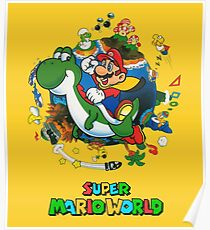

Welcome to Super Mario World – The Ultimate Classic!
"Super Mario World" is one of the most beloved platformers of all time. Released in 1990 for the Super Nintendo Entertainment System (SNES), this game introduced players to Dinosaur Land, where Mario and Luigi embark on a thrilling adventure to rescue Princess Peach from Bowser’s grasp.
Master Super Mario World – Hidden Secrets & Tips!
Super Mario World is one of the most iconic video games of all time, released in 1990 for the Super Nintendo Entertainment System (SNES). The game follows Mario and Luigi as they journey through Dinosaur Land to rescue Princess Peach from Bowser, introducing innovative mechanics like Yoshi, secret exits, and the Cape Feather, which allows Mario to fly. With over 96 levels, hidden paths, and non-linear progression, the game set a new standard for platformers. Players can discover Star Road and the Special Zone, offering extra challenges and replay value. Even today, its tight controls, colorful visuals, and timeless gameplay make it a beloved classic, accessible through digital re-releases on modern consoles like the Nintendo Switch.
